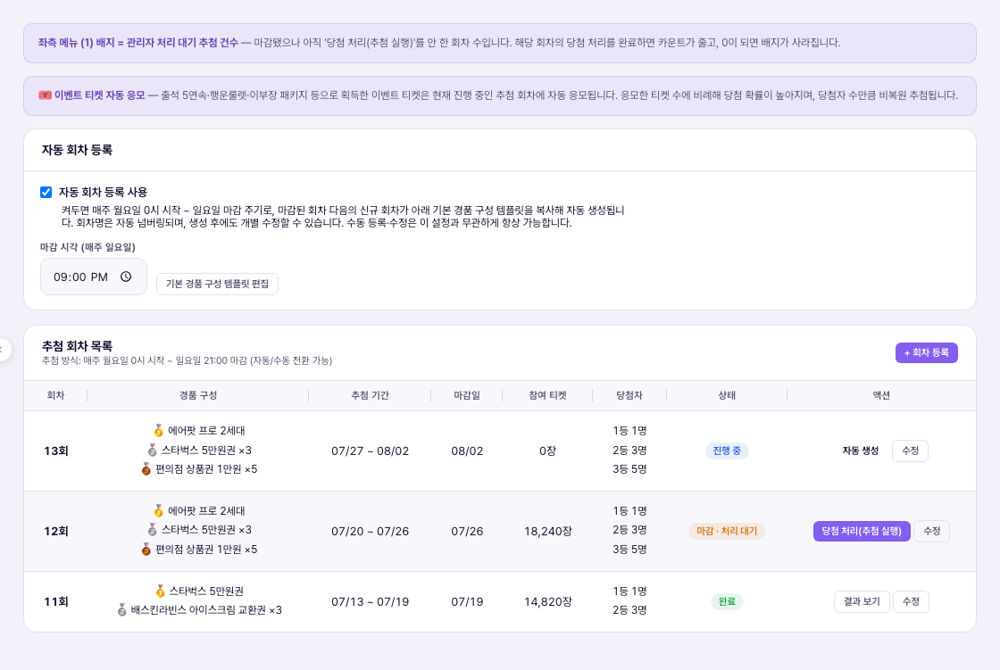
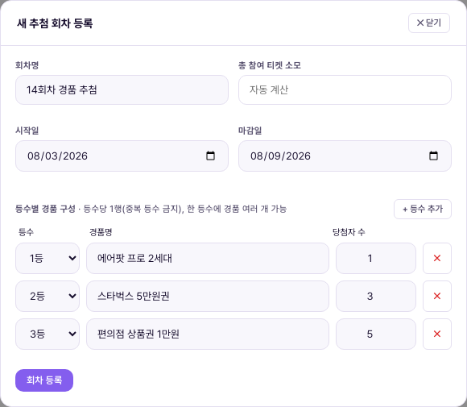

추첨 관리 = 이벤트 티켓을 소모해 참여하는 경품 추첨 "회차"를 등록하고, 마감 후 당첨자를 확정하는 화면. 사용자는 회차마다 이벤트 티켓을 써서 응모하고(1회 최대 10장), 관리자는 회차별로 등수·경품·기간을 정한 뒤 마감일이 지나면 직접 "당첨 처리(추첨 실행)"를 눌러 당첨자를 뽑는다. 지금은 1단계 — 관리자가 수동으로 추첨을 실행하는 방식이며, 당첨자에게는 카톡·이메일로 배송지 입력을 안내하고 경품은 수동 발송한다.Quản lý bốc thăm = màn hình đăng ký các "đợt" bốc thăm quà tặng mà người dùng tham gia bằng cách tiêu vé sự kiện, và xác nhận người trúng thưởng sau khi đợt kết thúc. Ở mỗi đợt, người dùng dùng vé sự kiện để tham gia (tối đa 10 vé/lần), còn Vận hành viên đặt hạng·quà·thời gian cho từng đợt, sau khi hết hạn thì tự tay bấm "Xử lý trúng thưởng (thực hiện bốc thăm)" để chọn người trúng. Hiện tại đang ở giai đoạn 1 — Vận hành viên thực hiện bốc thăm thủ công, người trúng sẽ được hướng dẫn nhập địa chỉ nhận hàng qua Kakao Talk·email và quà được gửi thủ công.

카드 제목은 "추첨 회차 목록", 부제는 "추첨 방식: 매주 월요일 자동 발표 (자동/수동 전환 가능)"다. 우측 상단에 "+ 회차 등록" 버튼이 있다. 표 컬럼은 회차 / 경품 구성 / 추첨 기간 / 마감일 / 참여 티켓 / 당첨자 / 상태 / 액션 — 총 8열이지만, 이 데모 환경에는 아직 등록된 추첨 회차가 없어 표가 비어 있다. 빈 상태 문구는 "등록된 추첨 회차가 없습니다. \"+ 회차 등록\" 버튼으로 추가하세요."로 뜬다.Tiêu đề thẻ là "Danh sách đợt bốc thăm", phụ đề "Cách thức bốc thăm: Công bố tự động mỗi thứ Hai hàng tuần (có thể chuyển tự động/thủ công)". Góc trên bên phải có nút "+ Đăng ký đợt". Cột bảng gồm Đợt / Cơ cấu quà / Thời gian bốc thăm / Hạn chót / Vé tham gia / Người trúng / Trạng thái / Hành động — tổng 8 cột, nhưng môi trường demo này chưa có đợt bốc thăm nào được đăng ký nên bảng đang trống. Thông báo trạng thái trống hiển thị: "Chưa có đợt bốc thăm nào được đăng ký. Nhấn nút \"+ Đăng ký đợt\" để thêm."
즉 지금 화면만 봐서는 "실제로 채워지면 어떤 모습인지" 확인할 수 없다. 아래 등록 폼 캡처의 입력 필드들이, 저 8개 컬럼에 채워질 실제 데이터의 출처다 — 가짜 이력 행을 지어내지 않고, 등록 폼 기준으로 설명한다.Nói cách khác, chỉ nhìn màn hình hiện tại thì không thể biết "khi có dữ liệu thật sẽ trông ra sao". Các trường nhập ở form đăng ký chụp bên dưới chính là nguồn dữ liệu thực tế sẽ lấp vào 8 cột đó — tài liệu này giải thích theo form đăng ký, không bịa ra dòng lịch sử giả.

| 요소Thành phần | 의미Ý nghĩa | 바꾸면 생기는 일Điều gì xảy ra khi thay đổi |
|---|---|---|
| 회차명Tên đợt | 텍스트 입력. placeholder 예시 "13회차 경품 추첨"Ô nhập văn bản. Placeholder ví dụ "Đợt bốc thăm quà lần 13" | 목록의 '회차' 컬럼과 앱 화면에 그대로 노출되는 이름Tên này hiển thị nguyên văn ở cột 'Đợt' trong danh sách và trên màn app |
| 총 참여 티켓 소모Tổng vé tiêu khi tham gia | 숫자 입력, 기본값 0Ô nhập số, mặc định 0 | 0으로 두면 응모해도 티켓이 안 빠지는 설정이 되므로, 실제 운영 시 반드시 값을 채워야 함(정책서 기준 응모 시 즉시 소모)Nếu để 0 thì cấu hình sẽ là tham gia mà không trừ vé, nên khi vận hành thực tế bắt buộc phải điền giá trị (theo chính sách, vé bị trừ ngay khi tham gia) |
| 시작일 / 마감일Ngày bắt đầu / Hạn chót | 날짜 선택기(예: 2026-05-19 ~ 2026-05-26)Bộ chọn ngày (vd: 19/05/2026 ~ 26/05/2026) | 마감일이 지나면 그 회차는 좌측 메뉴 (1) 배지에 포함되는 '관리자 처리 대기' 상태가 됨Sau khi qua hạn chót, đợt đó chuyển sang trạng thái 'chờ Vận hành viên xử lý' và được tính vào badge (1) ở menu bên trái |
| 등수별 경품 구성Cơ cấu quà theo hạng | 등수당 1행(중복 등수 금지), 한 등수에 경품 여러 개 등록 가능. 각 행 = 등수 드롭다운(1등/2등/…) + 경품명 텍스트(예: "에어팟 프로 2세대", "스타벅스 5만원권") + 당첨자 수 숫자 + 삭제(×) 버튼Mỗi hạng 1 dòng (cấm trùng hạng), một hạng có thể đăng ký nhiều quà. Mỗi dòng = dropdown hạng (Hạng 1/Hạng 2/…) + ô văn bản tên quà (vd "AirPods Pro thế hệ 2", "Phiếu quà tặng Starbucks 50.000 KRW") + số người trúng + nút xóa (×) | 전체 당첨자 수 = 모든 행의 '당첨자 수' 합계. 비복원 추첨이므로 등수 행이 많을수록 응모 총량 대비 뽑히는 인원이 늘어남Tổng số người trúng = tổng cột 'số người trúng' của mọi dòng. Vì bốc thăm không hoàn lại, càng nhiều dòng hạng thì số người được chọn trên tổng lượt tham gia càng tăng |
| "+ 등수 추가Thêm hạng" | 경품 구성 행을 하나 더 추가하는 버튼Nút thêm một dòng cơ cấu quà nữa | 등수 드롭다운은 이미 쓰인 등수를 다시 고르면 중복 등수가 되므로 운영자가 직접 주의해야 함(시스템이 막아주는지는 이 캡처만으로 확인 불가)Nếu chọn lại hạng đã dùng ở dropdown sẽ tạo trùng hạng, nên Vận hành viên cần tự chú ý (chưa xác nhận được liệu hệ thống có tự chặn hay không chỉ từ ảnh chụp này) |
| "회차 등록Đăng ký đợt" | 모달 하단 제출 버튼Nút submit ở cuối modal | 누르면 목록 표에 새 행이 생기고, 시작일부터 사용자 응모가 열림Bấm xong sẽ tạo dòng mới trong bảng danh sách, và người dùng có thể bắt đầu tham gia từ ngày bắt đầu |
6단계 전부가 사람 손을 거친다는 게 1단계의 핵심이다. 자동 발표·자동 발송은 아직 없다 — "당첨 처리" 버튼도, 배송지 안내도, 발송도 관리자가 직접 확인하며 진행한다.Điểm cốt lõi của giai đoạn 1 là cả 6 bước đều qua tay người. Chưa có công bố tự động·gửi tự động — nút "Xử lý trúng thưởng", hướng dẫn địa chỉ, và việc gửi quà đều do Vận hành viên trực tiếp kiểm tra và thực hiện.
| 상황Tình huống | 운영자가 하는 일Việc Vận hành viên làm | 사용자에게 생기는 일Điều xảy ra với người dùng |
|---|---|---|
| 신규 회차 개설Mở đợt mới 정기 경품 추첨 시작Bắt đầu đợt bốc thăm quà định kỳ | "+ 회차 등록" → 회차명·기간·티켓 소모량·등수별 경품 입력 → 등록"+ Đăng ký đợt" → nhập tên·thời gian·số vé tiêu·quà theo hạng → đăng ký | 시작일부터Từ ngày bắt đầu, 앱에서 응모 가능có thể tham gia trên app |
| 마감 후 미처리 누적Tồn đọng sau khi hết hạn 여러 회차가 동시에 마감Nhiều đợt cùng hết hạn | 좌측 (1) 배지 숫자만큼 회차가 밀려 있음 → 회차마다 순서대로 "당첨 처리" 실행 필요Số đợt tồn đọng bằng đúng số ở badge (1) → cần lần lượt bấm "Xử lý trúng thưởng" cho từng đợt | 당첨자 발표가Việc công bố người trúng 처리 전까지 지연bị trễ cho đến khi được xử lý |
| 경품 예산 상한 근접Sát trần ngân sách quà 매출 대비 예산 비율 준수 필요Cần tuân thủ tỷ lệ ngân sách trên doanh thu | 회차 개설 전 예산 비율 확인 → 경품 단가·당첨자 수 조정 (단, 비율 자체가 정책 미결 — 5번 항목 참고)Kiểm tra tỷ lệ ngân sách trước khi mở đợt → điều chỉnh đơn giá quà·số người trúng (nhưng tỷ lệ chính thức vẫn chưa chốt chính sách — xem mục 5) | 경품 구성이 회차마다Cơ cấu quà giữa các đợt có thể 달라질 수 있음khác nhau |
데모 CMS의 좌측 메뉴에서 '추첨 관리'의 정책 확인 배지는 확인중 (1)로 표시된다. 이 "(1)"은 앞서 설명한 사이드바 '관리자 처리 대기' 배지와는 별개의 개념 — 여기서는 "정책 확정이 안 끝난 항목이 1개 있다"는 뜻이며, 정확히 위 4번 항목의 추첨 주기 불일치를 가리킨다. 즉 이 화면 자체가 "아직 확정 전 상태로 운영 중"이라는 걸 CMS 스스로 표시하고 있는 셈이다.Ở menu bên trái của CMS demo, badge xác nhận chính sách của 'Quản lý bốc thăm' hiển thị Đang xác nhận (1). Con số "(1)" này là khái niệm khác với badge 'chờ Vận hành viên xử lý' đã nói ở trên — ở đây nó có nghĩa là "có 1 mục chính sách chưa chốt xong", và chính là chỉ đến sự không nhất quán về chu kỳ bốc thăm ở mục 4. Nói cách khác, chính CMS đang tự hiển thị rằng màn hình này "đang vận hành ở trạng thái chưa chốt".
데모 CMS는 회차 등록·경품 구성 저장까지만 동작한다. 실제 응모 티켓 소모, 비복원 추첨 실행, 카톡·이메일 발송은 정식 앱·운영 프로세스가 맡는 영역이며 이 데모와는 연결돼 있지 않다. 지금 목록이 빈 상태인 것도 데모에 회차 데이터를 아직 심지 않았기 때문이지, 기능이 없어서가 아니다.CMS demo chỉ hoạt động đến mức đăng ký đợt·lưu cơ cấu quà. Việc tiêu vé khi tham gia thực tế, thực hiện bốc thăm không hoàn lại, gửi Kakao·email thuộc về app chính thức·quy trình vận hành, không kết nối với demo này. Sở dĩ danh sách đang trống là vì demo chưa được nạp dữ liệu đợt bốc thăm, không phải vì thiếu tính năng.